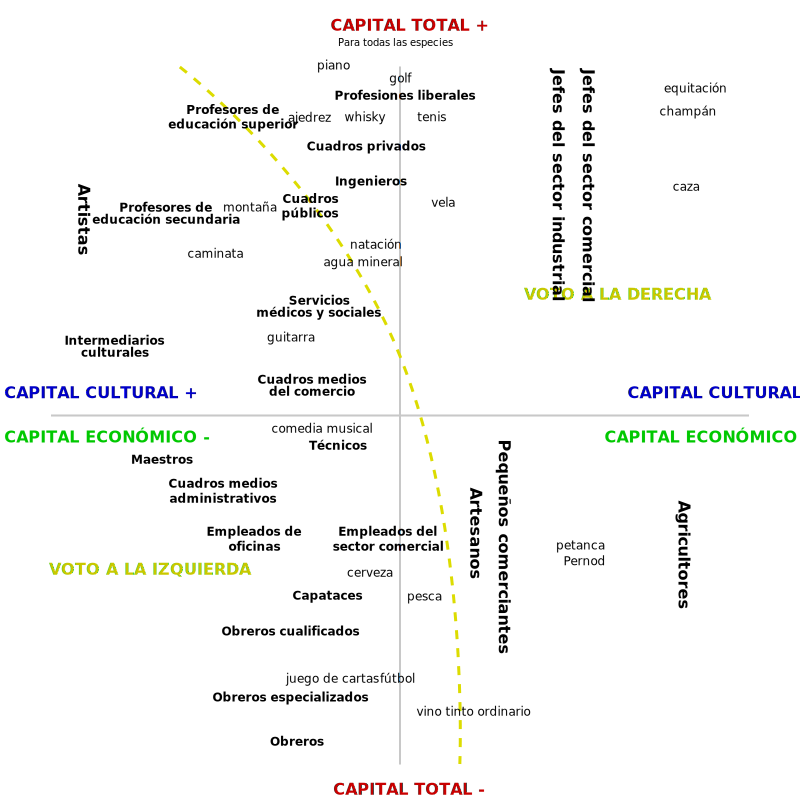

Clase 11
Análisis de conglomerados I
Análisis Avanzado de Datos
Técnicas de interdependencia
Tipos de técncias multivariadas
En el análisis multivariable, las técnicas se pueden clasificar en técnicas de dependencia y técnicas de interdependencia. La selección de la técnica adecuada depende de la naturaleza de la pregunta de investigación y la relación entre las variables.
Técnicas de Dependencia
Las técnicas de dependencia se utilizan cuando existe una clara distinción entre variables dependientes (o respuesta) y variables independientes (o predictoras). Es decir, hay una relación de dependencia que se quiere modelar y analizar. El objetivo principal de estas técnicas es estimar el efecto de las variables independientes sobre las dependientes.
- Ejemplos de técnicas de dependencia incluyen:
- Regresión lineal
- Análisis de varianza (ANOVA)
En estos casos, se trata de predecir o explicar la variabilidad de una o más variables dependientes con base en el conocimiento de otras variables. Por ejemplo, la regresión lineal trata de modelar cómo la variable dependiente cambia en función de las variables independientes.
Técnicas de interdependencia
Las técnicas de interdependencia se aplican cuando no existe una distinción clara entre variables dependientes e independientes, o no es necesario establecer una relación de dependencia. En lugar de eso, todas las variables se tratan de igual forma, y el objetivo es descubrir patrones o estructuras ocultas en los datos.
- Ejemplos de técnicas de interdependencia incluyen:
- Análisis de conglomerados (Cluster Analysis)
- Análisis factorial
- Análisis de componentes principales
En el análisis de conglomerados, por ejemplo, se busca agrupar los datos en conglomerados que compartan características similares sin diferenciar entre variables predictoras y dependientes. Todas las variables se tratan de igual manera, y se intenta identificar agrupaciones empíricas dentro de los datos.
Ejemplo: Análisis de correspondencias múltiples
Análisis de Conglomerados
Introducción al Análisis de Conglomerados
El análisis de conglomerados (o “cluster analysis”) es una técnica que se ubica dentro de las técnicas multivariables de clasificación. Su objetivo es agrupar datos en grupos llamados conglomerados, donde los integrantes de un conglomerado son lo más similares posibles entre sí y diferentes de los otros grupos.
El análisis de conglomerados se utiliza ampliamente en diferentes disciplinas debido a su capacidad para identificar estructuras ocultas dentro de los datos. Esta técnica se enfoca principalmente en la exploración de datos, sin tener hipótesis a priori sobre la estructura de los mismos.
Objetivos del Análisis de Conglomerados
- Desarrollar tipologías o clasificaciones de datos.
- Permite identificar patrones dentro de los datos y agruparlos según características compartidas.
- Buscar esquemas conceptuales útiles para agrupar entidades.
- Estos esquemas pueden utilizarse para comprender mejor el comportamiento de los datos y realizar predicciones.
- Generalizar hipótesis a través de la exploración de datos.
- Explorar datos sin hipótesis previas y generar nuevas hipótesis basadas en los conglomerados formados.
- Validar tipos definidos a través de otros procedimientos.
- Se pueden utilizar técnicas complementarias para validar la calidad de los conglomerados, como el análisis discriminante o pruebas estadísticas.
Críticas y Límites del Análisis de Conglomerados I
- Subjetividad en la Aplicación:
- El análisis de conglomerados depende en gran medida del investigador, quien toma decisiones importantes como la selección de las variables, la medida de distancia/similitud a utilizar y el número final de conglomerados a aceptar. Esta dependencia hace que el análisis de conglomerados sea considerado por algunos como una técnica muy subjetiva.
- Falta de Contrastes Estadísticos:
- A diferencia de otras técnicas, como el análisis discriminante, el análisis de conglomerados no proporciona un contraste estadístico que permita corroborar o refutar las hipótesis de investigación. Esto implica que el análisis de conglomerados no avanza hacia la inferencia estadística, sino que se queda en un plano meramente descriptivo. Para proceder a la inferencia, es necesario recurrir a técnicas adicionales, como el análisis discriminante o el análisis factorial confirmatorio, que permitan validar los hallazgos del análisis de conglomerados.
Críticas y Límites del Análisis de Conglomerados II
- Carácter Descriptivo y No Inferencial:
- El análisis de conglomerados se caracteriza como una técnica analítica descriptiva, ateórica y no inferencial (Hair et al., 1999). Carece de bases estadísticas que permitan la inferencia de estimaciones muestrales a parámetros poblacionales, lo que lo limita a un plano meramente exploratorio.
- Soluciones No Únicas:
- Las soluciones obtenidas en el análisis de conglomerados no son únicas. La pertenencia de una observación a un conglomerado depende de múltiples elementos del procedimiento, lo que implica que se pueden obtener soluciones diferentes al variar uno o más de estos elementos. Además, el análisis de conglomerados siempre concluye con la formación de conglomerados, incluso si los datos no presentan una estructura auténtica.
Etapas del Análisis de conglomerados
Pasos Principales en el Análisis de Conglomerados
En la ejecución de un análisis de conglomerados se siguen una serie de fases que pueden resumirse en los siguientes pasos:
- Selección de Variables:
- Selección de las variables que favorezcan la agrupación de los datos. Esta es una decisión clave y previa a cualquier análisis de conglomerados, ya que las variables elegidas determinan las características de clasificación que identifican a cada conglomerado.
- Selección del Procedimiento de Conglomeración:
- Decidir qué tipo de procedimiento de conglomeración se seguirá, ya sea jerárquico y/o no jerárquico, junto con el algoritmo específico de clasificación para la creación de los conglomerados.
Pasos Principales en el Análisis de Conglomerados
- Elección de Medidas de Distancia y Proximidad:
- Elegir las medidas de distancia y proximidad para proceder a la formación de los conglomerados. Esta elección depende en gran medida de la naturaleza de las variables incluidas en el análisis. Para variables métricas, hay más opciones disponibles, mientras que para variables no métricas (nominales u ordinales), se utilizan medidas de co-ocurrencia.
- Decisión sobre el Número de Conglomerados:
- Determinar el número de conglomerados que se constituirán, basado en criterios estadísticos, visualizaciones (como dendogramas) o criterios teóricos.
Pasos Principales en el Análisis de Conglomerados
- Presentación e Interpretación de Resultados:
- Presentar e interpretar los resultados obtenidos, tanto en su forma numérica (tablas de aglomeración) como gráfica (dendogramas y gráficos de témpanos).
- Validación de Resultados:
- Validar los resultados del análisis. Si los resultados no alcanzan la calificación de válidos, se deben introducir modificaciones para mejorar la solución, lo cual implica repetir el proceso desde el principio, revisando las decisiones previas.
Estas fases se pueden agrupar en cuatro bloques principales: selección de variables, procedimiento de conglomeración, interpretación de resultados, y validación de los hallazgos, que se repiten iterativamente hasta alcanzar una solución adecuada.
Elección de Variables
La elección de las variables es crucial ya que determina la calidad de la agrupación. Las decisiones deben basarse en la naturaleza de los datos y el objetivo de la investigación:
- Relevancia: Se deben elegir variables que sean relevantes para los objetivos del estudio.
- Colinealidad: Evitar incluir variables muy correlacionadas, ya que pueden influir demasiado en la formación de los conglomerados.
- Escalado: Variables con rangos muy diferentes deberían ser estandarizadas para evitar sesgos, ya que el análisis de conglomerados es muy sensible a las escalas de las variables.
- Estandarización: Convertir las variables a puntuaciones Z para que tengan media cero y desviación estándar uno.
Métodos Jerárquicos vs No Jerárquicos
Métodos Jerárquicos
Los métodos jerárquicos son aquellos en los que los conglomerados se forman de manera jerárquica. Esto significa que el proceso de agrupamiento se realiza en una serie de pasos sucesivos, donde cada observación se va uniendo progresivamente a conglomerados más grandes, o conglomerados se van dividiendo en grupos más pequeños. Los métodos jerárquicos pueden ser aglomerativos o divisivos.
Métodos Jerárquicos
- Aglomerativos: Forman conglomerados empezando desde objetos individuales y uniéndolos en conglomerados mayores hasta que todos los objetos se encuentran en un solo conglomerado. Se utiliza un criterio de distancia para decidir qué objetos agrupar.
- Algoritmos comunes: Método de Ward, Método del centroide, Distancias mínimas/máximas.
- Ventaja: Permite observar la estructura completa de los conglomerados.
- Desventaja: Puede ser computacionalmente costoso en grandes volúmenes de datos.
- Divisivos: Comienzan con un solo conglomerado que incluye todos los objetos, y sucesivamente dividen los conglomerados hasta que cada objeto pertenece a su propio conglomerado.
Métodos No Jerárquicos
Los métodos no jerárquicos no siguen un proceso jerárquico de agrupamiento, sino que intentan dividir el conjunto de datos en un número predefinido de conglomerados. Estos métodos asignan iterativamente los datos a conglomerados con base en una medida de similitud, buscando optimizar la homogeneidad dentro de los conglomerados y la heterogeneidad entre ellos.
- K-Means: Agrupa datos en un número predefinido de grupos. El algoritmo selecciona aleatoriamente los centroides iniciales y, luego, cada dato se asigna al centroide más cercano. Los centroides se recalculan iterativamente hasta que no se producen más cambios significativos.
- Se eligen los centroides aleatoriamente y los datos se reasignan iterativamente hasta minimizar la variación intragrupal.
- Ventaja: Es eficiente en grandes conjuntos de datos.
- Desventaja: Es sensible a los valores iniciales y puede converger a soluciones subóptimas si no se eligen buenos centroides.
Métodos Jerárquicos vs No Jerárquicos
| MÉTODOS JERÁRQUICOS | MÉTODOS NO JERÁRQUICOS |
|---|---|
| Dificultad para determinar el mejor algoritmo de clasificación a priori. | Dificultad para conocer el número “real” de conglomerados a priori. Esto puede influir en la calidad del análisis. |
| Operar con muestras grandes (>200) es complicado debido al tamaño de la matriz de similitud. La lectura de dendogramas y gráficos se hace difícil. | Formar todas las particiones posibles para encontrar la óptima supone realizar cálculos iterativos muy complejos, lo cual es difícil en muestras grandes. |
Métodos Jerárquicos vs No Jerárquicos
| MÉTODOS JERÁRQUICOS | MÉTODOS NO JERÁRQUICOS |
|---|---|
| Una mala partición inicial no puede modificarse en etapas posteriores, afectando la calidad del resultado. | Una decisión inicial incorrecta sobre el número de conglomerados puede llevar a clasificaciones erróneas que perjudiquen los resultados finales. |
| Mayor predisposición a detectar “atípicos” (outliers), lo cual puede distorsionar los conglomerados generados. | La complejidad de los cálculos hace que el proceso sea muy dependiente de la capacidad del ordenador, afectando la eficiencia del análisis. |
Distancia en el Análisis de Conglomerados
- Distancia y Similaridad: En el análisis de conglomerados, la noción de distancia es clave para determinar cuán similares o diferentes son los objetos que se desean agrupar. Se utilizan matrices de proximidad que pueden expresar tanto distancias como similaridades entre los elementos.
- Matriz de Distancia: Mide cuán alejados están dos objetos entre sí. Valores bajos indican mayor similitud, mientras que valores altos indican que los objetos son más distintos.
- Matriz de Similaridad: Expresa la semejanza entre objetos. Valores altos representan mayor similitud.
Distancia en el Análisis de Conglomerados
Las decisiones sobre cuáles objetos combinar para formar un conglomerado se basan en estas matrices.
Dependiendo del tipo de variables, se utilizan diferentes medidas para calcular las distancias o similaridades (por ejemplo, medidas euclidianas para variables continuas o coeficientes de Jaccard para datos binarios).
Tipos de Medidas:
- Medidas de Distancia: Se enfocan en cuán diferentes son los objetos en términos de magnitudes. Ejemplo: Distancia euclidiana.
- Medidas de Similaridad: Enfocadas en patrones comunes entre objetos. Ejemplo: Correlación de Pearson.
Distancia Euclidiana
La distancia euclidiana es la distancia “en línea recta” entre dos puntos en un espacio multidimensional, calculada según el Teorema de Pitágoras. Se utiliza mayormente para variables continuas.
Fórmula Matemática: La distancia euclidiana entre dos objetos (i, j) se calcula como: \[ d_{ij} = \sqrt{\sum_{k=1}^{p} (x_{ik} - x_{jk})^2} \]
- Donde \(x_{ik}\) y \(x_{jk}\) son los valores de la variable \(k\) para los objetos \(i\) y \(j\) respectivamente.
Propiedades:
- Siempre positiva: La distancia siempre será mayor o igual a cero.
- Valores Bajos: Indican que los objetos son más similares entre sí.
- No tiene límite superior: La distancia puede ser tan grande como lo permitan los datos.
Distancia Euclidiana
- Distancia Euclidiana al Cuadrado: Frecuentemente usada en algoritmos de conglomerados como el método del centroide y el método de Ward. Se define como la suma de los cuadrados de las diferencias entre los valores de las variables de los objetos.
- Problema de Escalabilidad: Si las variables están en diferentes unidades de medida, las variables con valores mayores pueden influir más en el cálculo de la distancia. La solución común es la estandarización de las variables.
Estandarización
¿Cuándo Estandarizar?: La estandarización de las variables es recomendable cuando las variables tienen diferentes unidades de medida o rangos significativamente distintos. Por ejemplo, si una variable está medida en ingresos anuales (en miles) y otra en edad (en años), la variable con valores más altos dominará el cálculo de la distancia.
Efecto de la Estandarización:
- Reducción de Influencia Desigual: La estandarización reduce la influencia de variables con grandes valores numéricos, asegurando que todas las variables contribuyan de manera equitativa al cálculo de la distancia.
- Posibles Desventajas: La estandarización puede minimizar diferencias que podrían ser relevantes en el contexto del análisis. Esto es especialmente cierto cuando la variabilidad en una variable tiene un significado sustancial importante.